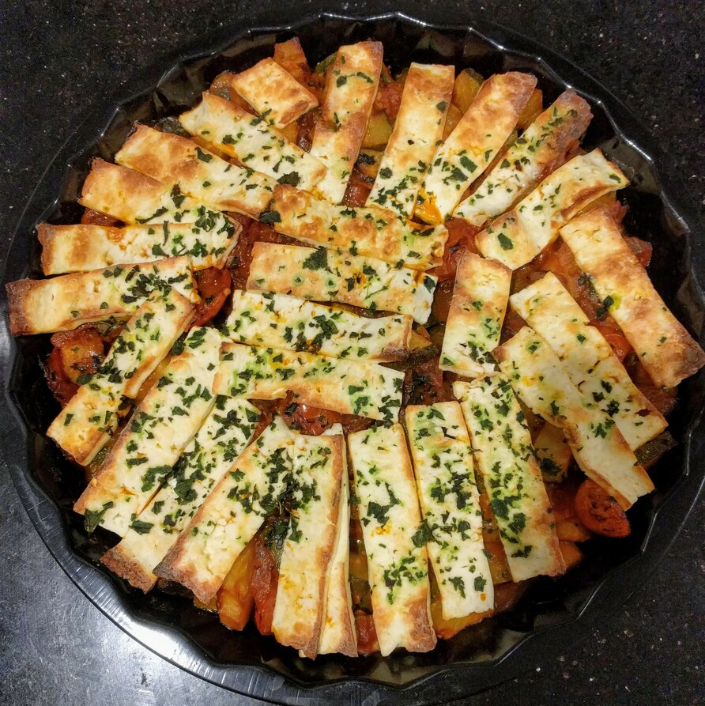

Mediterranean Halloumi Bake

Preheat oven to 220 degress
1 tbspnolive oil1onion
Heat olive oil and saute onion for 2 mins
2 clovesgarlic
Add garlic and cook for another min
2zucchini15cherry tomatoes3 tbspnstomato puree1 tbspntumeric1 tbspncumin1 tbspnsmoked paprika1 smallchillisomesalt
Add diced zucchini, quartered cherry tomatoes, tomato puree and tumeric, cumin, smoked paprika, chilli, salt and @pepper.
Cover with lid and simmer for 20 mins
Add water or passata if the tomatoes and zucchinis do not release enough juice to make a sauce
180ghalloumi
Cover the dish with the sliced halloumi, place it under the grill until halloumi slice are golden brown.
1 handfulbasil
Sprinkle with fresh basil and enjoy